I'm a software developer from New Orleans, Louisiana. I'm passionate not only about development, but more importantly- technology, and how it can help benefit society.
I recently graduated from Loyola University New Orleans with a degree in Management and minor in Music Industry Studies. I was fortunate enough to attend a software development bootcamp that was available to the Alumni and I have fallen in love with the industry since. During bootcamp we learned how to build, maintain, and deploy web-based applications in an immersive agile based enviroment. Check out some of my work below to see what I've been up to!
 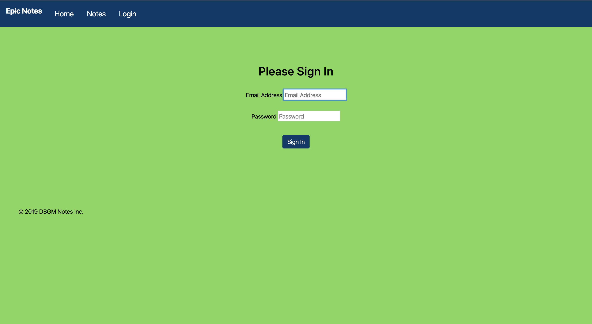
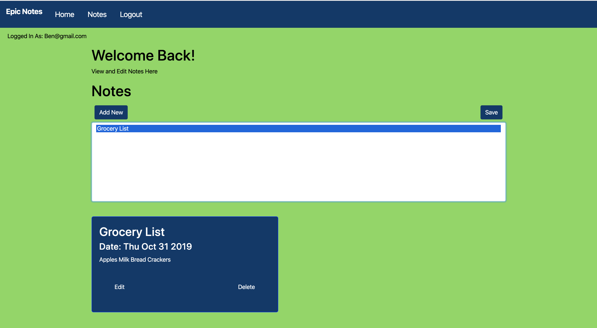
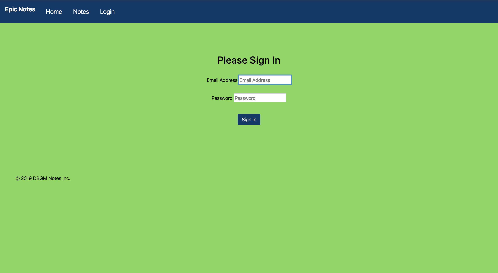
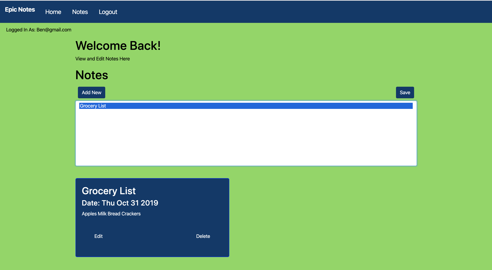
Epic Notes application was one of the first applications I worked on. In it you are able to create new notes, organize notes and delete notes. I used HTML, CSS, and Javascript. Also third party APIs were used for registration and newsletter sign ups.
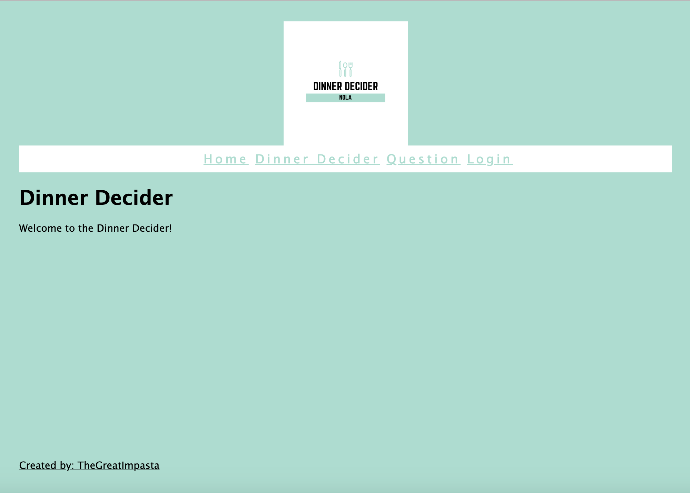
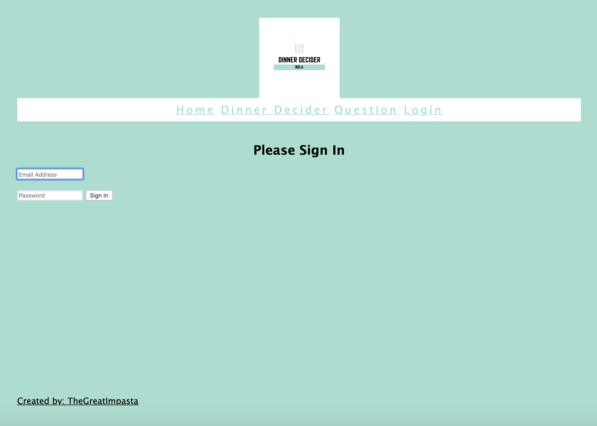
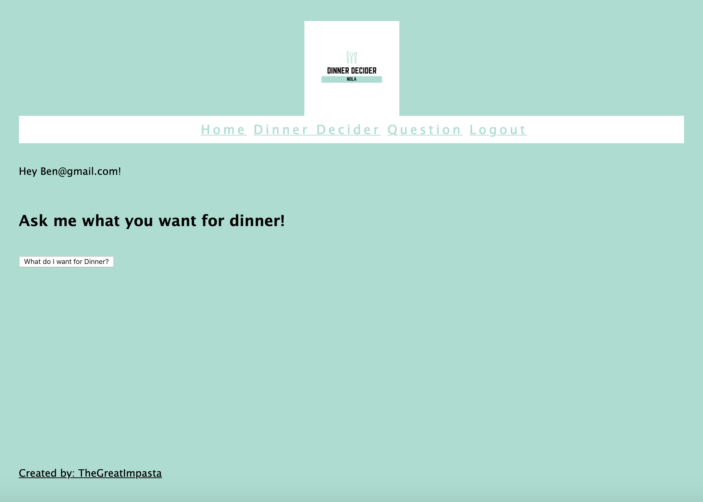
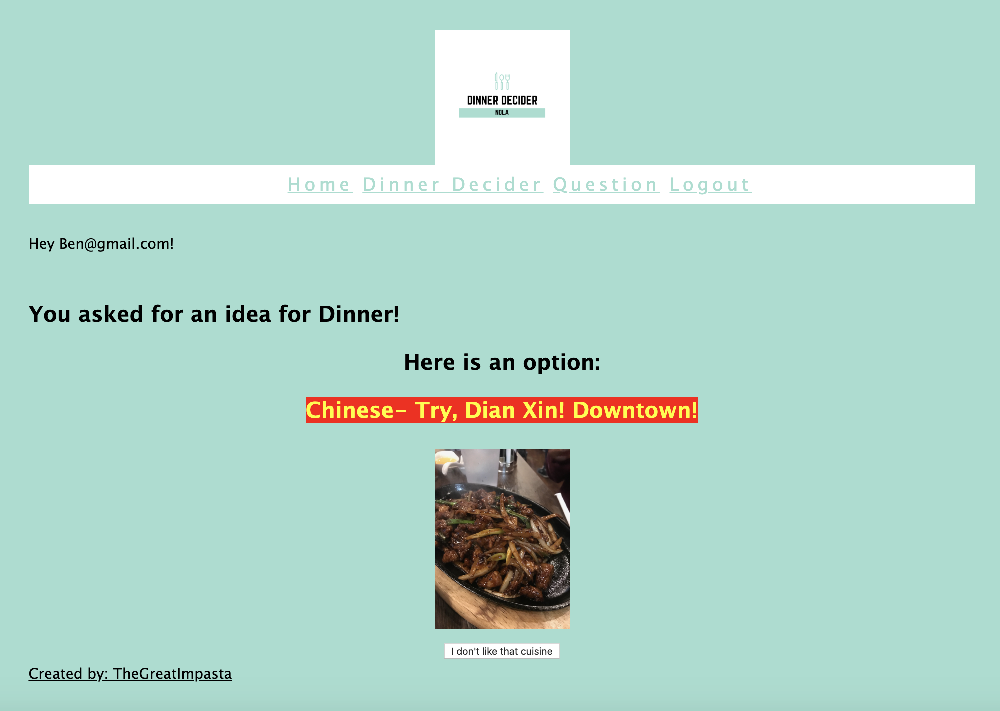
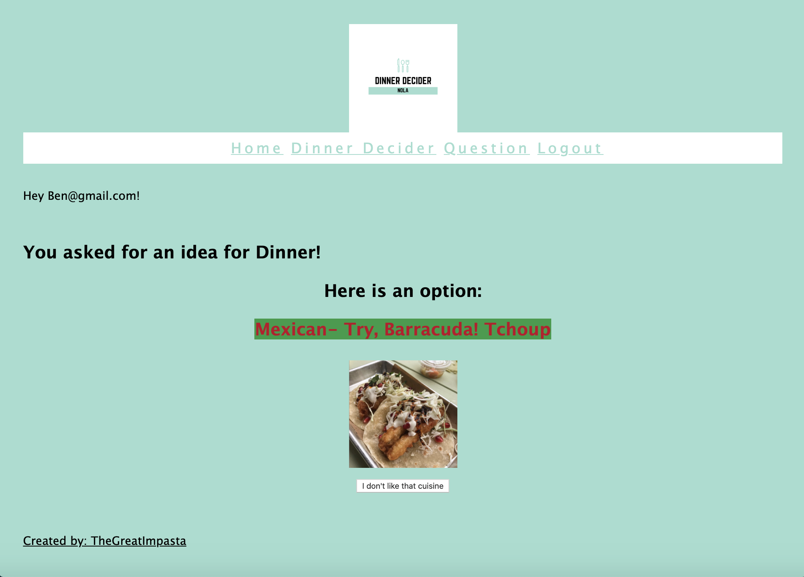
The DinnerDecider was the first applicaiton I ever made completely by myself. It gives you a random option to eat for dinner. The application so far only works for places in New Orelans. Once you ask it what you want for dinner it will tell you not only a cuisine but also it will reccomend an actual resturant in the city. I used some Javascript to randomize the options.
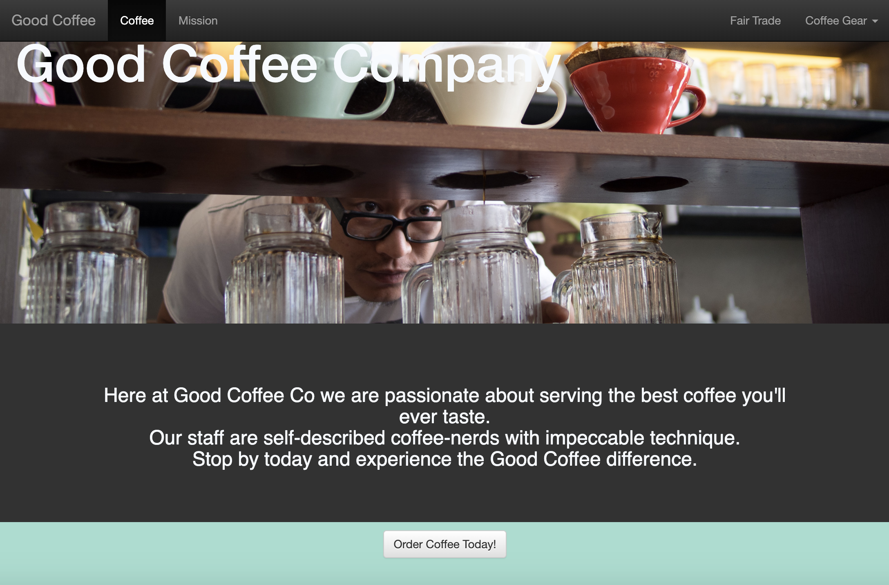
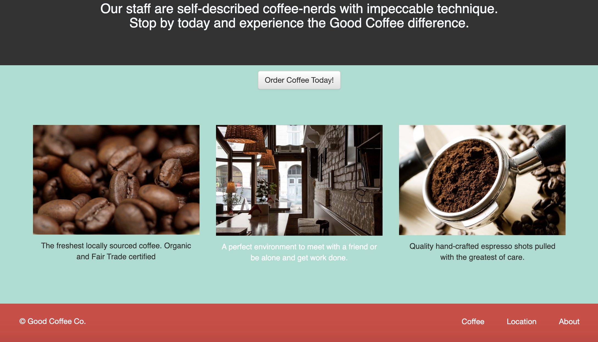
This aplication was a landing page we made for an example with clickable buttons and links during the begining of class. HTML and CSS were used to make it.